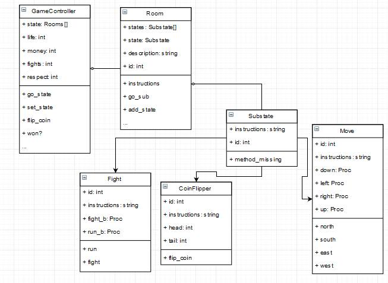
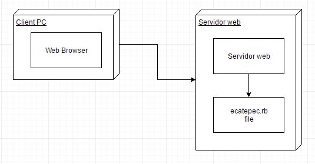
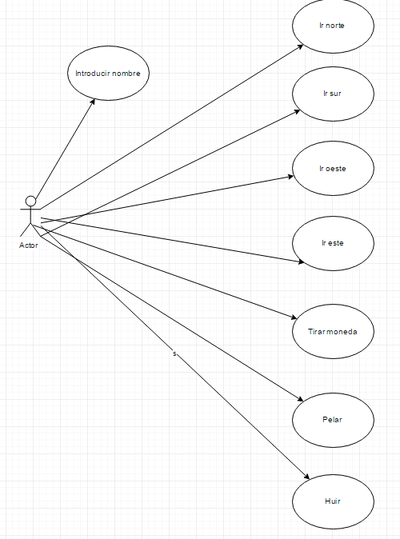

Application Design and Architecture¶ ↑
- Authors
-
Brian Flores, Alejandro Rojas, Eduardo Azuri, Eduardo Rodríguez
- Date
-
May 04, 2016
In this documentation we will explain the steps required in order to install and run the game “Sobrebibiendo Ekatepek”. We'll now explain the directory structure for the application and its documentation:
Arqui/
├─ doc/ Folder produced by RDoc.
├─ images/ Folder for the documentation's image files.
└─ src/ Folder for the application's source code.
├─ public/ Folder for the server's public documents.
│ └─ stylesheets/ Folder for the application's CSS files.
├─ models/ Folder for the application's models.
└─ views/ Folder for the application's views (ERB files).
Installing and Running the Application¶ ↑
In order to run the game you have to position yourself inside the directory of the project and then run the file “ecatepec.rb” with the following command:
ruby -I . -w "ecatepec.rb"
Afterwards, point your web brower at the following URL:
http://localhost:4567/
4+1 Architectural View Model¶ ↑
We'll now explain the different views that conform the architectural model of our application.
Logical View¶ ↑
The logical view contains information about the various parts of the system. In UML the logical view is typically modelled using class diagrams.
For example, the following figure represents the UML class diagram for the
Greeter model and its factory class:

You can include as many of these diagrams as you consider necessary. Note that you only need to specify the names of the classes and their relationships. Don't include attributes or method names in these diagrams.
To include an image in this document, copy it to the images
directory and refer it as: link:../images/some_image.png. You
can use any web supported image format (PNG, JPEG, GIF, etc.).
Process View¶ ↑
The process view describes the concurrent processes within the system. In UML, activity diagrams are used to model this view.
Development View¶ ↑
The development view focusses on software modules and subsystems. In UML, package diagrams are used to model the development view.
Physical View¶ ↑
The physical view describes the physical deployment of the system, revealing which pieces of software run on what pieces of hardware. In UML, deployment diagrams are used to model the physical view.
For example, this is the deployment diagram for our application:

Scenarios¶ ↑
This view describes the functionality of the system from the perspective from outside world. It contains diagrams describing what the system is supposed to do from a black box perspective. UML use case diagrams are used for this view.

Patterns Used¶ ↑
The patterns that were used within our project are:
-
State Pattern: The
ecatepec.rbfile consists of a series of Sinatra routes. Sinatra is a DSL for creating web applications in Ruby. -
Model View Controller: The application follows the classical web implementation of the MVC architectural pattern. The models (
.rbfiles) and views (.erbfiles) are stored in the correspondingmodelsandviewsdirectory. The controller is contained inserver.rbfile. -
Strategy Factory: The
gameFactoryis used to createGameinstances by specifying the desired language during its creation.
Acknowledgments¶ ↑
We'd like to recognize the labor of every member in our team for their dedication towards success. Additionalywe'd like to thank the following.
-
Samantha Ponce & nail (Edgar López).
-
Saul de Nova for his constant support and laughs.
References¶ ↑
-
Ph. Kruchten. The 4+1 View Model of Architecture. IEEE Software, vol. 12 (6), pp. 45-50, 1995. http://www.ics.uci.edu/~andre/ics223w2006/kruchten3.pdf Accessed May 3, 2016.
-
R. Olsen. Design Patterns in Ruby. Addison-Wesley, 2007. Available through Safari Books Online Accessed May 3, 2016.
-
Ruby-Doc.org. RDoc Markup Reference. http://ruby-doc.org/stdlib-2.2.3/libdoc/rdoc/rdoc/RDoc/Markup.html Accessed May 3, 2016.